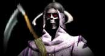

|
 |
 |

| |
|
|

oici venue une nouvelle ère. Sa venue est marquée par l’arrivée en ce monde des seigneurs ayant fait leurs marques. Ces gens ont acquis de l’expérience et de la noblesse.
Hai quitta le royaume des amazones pour parcourir le monde et imprégner les différentes races de son savoir. Il a instauré à travers le monde un moyen plus démocratique de déterminer un roi dans les différents royaumes qu'il a visités. Il a passé beaucoup de temps chez les elfes nobles, une race qu'il connaissait peu. Il a été surpris par leur immense faculté d'apprentissage. Il a regroupé leur meilleur combattant pour les instruire dans l'art du combat. Il en a fait des combattants qui n'ont pas d'égale dans ce monde.
Yah de son côté a passé beaucoup de temps avec son fils Yahvé au royaume des génies. Cette race a profité des enseignements du dieu et elle est devenue maître incontesté en matière de magie. Il alla rejoindre son épouse Talandelle, ils allèrent jusqu'au bout du monde, et ensemble ils créèrent de nouvelles terres, de nouvelles montagnes et de nouvelles forêts, le monde grandissait.
Pendant ce temps, une nouvelle menace planait sur ce monde. La mort elle-même rôdait. Le peuple des morts avait accru sa puissance, ils avaient acquis de grands

pouvoirs en magie et au combat. Bien que désorganisé au début, un nouveau chef du nom de Carcassos apparut et cette race devint une réelle menace pour les autres. Carcassos aimait la mort et il haïssait les vivants. Il était un grand nécromancien du temps de son vivant, mais maintenant qu'il était mort-vivant il était encore plus puissant. Il regroupa tous ceux de sa race, attaqua des villages isolés, chaque victime était un nouveau soldat pour son armée. Leur grande force ne venait pas nécessairement dans leur habileté au combat, mais plutôt au fait qu'ils étaient impossible à tuer...
Disposant maintenant d'une armée impressionnante, Carcassos décida de s'attaquer à de plus grands royaumes. Il attaqua une grande cité naine. Le combat fut très violent, mais les nains ont subi une défaite déchirante, car au fil du combat les guerriers nains devaient combattre de nouveau guerrier, ces guerriers étaient les combattants nains tombés au combat. Ils devaient combattre leurs anciens amis. Les survivants prirent la fuite vers la cité la plus proche. Cette ville est l'immense cité fortifiée où habite Enric le plus sage de la race des humains. Du moment qu'il apprit la nouvelle des rescapés, Enric envoya des coursiers quérir de l'aide aux royaumes voisins. Le premier à venir en aide, fut un ami de toujours de Enric, Scarb le centaure arriva avec un groupe de deux milles guerriers. Ils arrivent rapidement, car leur royaume était près et leur pas était rapide.
Carcassos fier de sa victoire décida de s'attaquer à encore plus grand, il allait maintenant assiéger la grande cité fortifiée des humains. Il rassembla tous ses combattants ainsi que les milliers de nouveaux combattants nains qui étaient devenus des morts-vivants. Il récupéra les différentes armes de siège ayant été abandonnées par les nains et il commença sa marche vers la cité. Enric de sa tour vu la nuée de terreur qui approchait. Bien que son armée fût nombreuse et ses fortifications impressionnantes, il savait que le nombre d'assaillants était trop grand pour les contenir, il envoya un messager avertir Yah de la situation.
Dès son arrivée l'armée des morts commença son attaque. Les armes de siège des nains étaient d'une efficacité incroyable. Les fortifications subissaient des dommages considérables. Les morts attaquaient sans relâche, nulle fatigue ne les affectaient. Les forces de Carcassos réussirent à enfoncer la porte de la grande cité. La force de l'impact fut terrible au point tel que la voûte de la porte tomba sur les soldats de l'armée des morts. À la grande surprise des humains, les morts-vivants qui étaient écrasés ne reprirent pas vie comme les autres qui étaient tués par l'épée ou par la flèche. Enric fit déployer les onagres disponibles pour écraser tous ceux qui tentaient de franchir la porte détruite. Carcassos voyant cela décida de lancer tous ses combattants à l'attaque. Bien qu'il était un grand nécromancien, il était un piètre tacticien, son but était de submerger l'entrée afin de pénétrer dans la cité et de faire le plus de victimes possible afin d'augmenter son armée grâce aux humains tués durant le combat. Il voulait vaincre par le nombre et voulait une victoire rapidement.
Un regroupement de centaures quittèrent la cité par une issue secrète. Grâce à leur grande vitesse, ils réussirent à contourner la marée de mort et de lancer une attaque par l'arrière. Ils récupérèrent les armes de siège naines abandonnées par les morts, et les utilisèrent contre eux. Les morts subirent de grande perte mais il en fallait beaucoup plus que ça pour arrêter ce déferlement de terreur. Une grande quantité de morts rebroussèrent chemin et virent terrasser les centaures. Carcassos sentait la victoire, les pertes subies allaient bientôt être compensées par le gain de toutes les victimes de cette tuerie. Enric, du haut de sa tour lança, sur les remparts, un souffle glacial qui forma un mur dans le trou de la porte détruite, plusieurs morts furent prisonniers de la glace. Cela donna le temps aux troupes restantes de se regrouper. Cette muraille ne suffira pas pour longtemps car les défendants allaient bientôt être submergé....
Sur le champ de bataille Carcassos savourait déjà sa victoire quand le temps sembla soudain s'arrêter, une brume venait ralentir son armée en mouvement. Tout à coup, une immense muraille de pierre s'éleva autour de la cité. Au loin, une lueur blanche approchait, c'était Yah. Le dieu se tenait seul sur la colline. Voyant que la cité était maintenant inaccessible et ne pouvant fuire nulle part, Carcassos lança son armée contre le dieu isolé. D'un geste de la main, Yah fit tomber du ciel de larges pierres en feu qui venaient écraser les morts. Tout en s'avançant, Carcassos vit une deuxième lueur blanche approcher. Hai était venu rejoindre son frère. Il n'était pas seul, un groupe impressionnant d'elfes nobles, de cyclope et quelque centaine d'archanges étaient avec lui. Avec l'ordre de Hai, les troupes lancèrent l'assault. Le combat fut brutal, mais les morts continuaient toujours de faire de leur victime de nouvelle recrue. Voyant cela Yah s'attaqua directement aux nécromanciers qui réanimaient les morts. Ils furent foudroyés les uns après les autres. L'armée des morts ne se renouvelait plus. Les troupes de Hai avancèrent très rapidement en direction de Carcassos. L'armée des morts était en déroute, la défaite était complète.
Carcassos fut fait prisonnier. Lorsque les archanges le conduisirent auprès des dieux, un étrange phénomène se produisit. Un portail magique s'ouvrit, des éclairs de flamme sortirent du portail et virent paralyser les gardiens. Au grand étonnement de Carcassos, un large bras rouge sortit du portail et attira le chef des morts à l'intérieur. Yah et Hai accoururent vers le portail, mais celui-ci disparut...
La menace des morts était maintenant disparue, mais personne, ni même les dieux ne savait qui avait enlevé Carcassos et à quel endroit il se trouvait...